Temperature and loading rate affect fracture through the competition between crack opening and crack-tip accommodation. We formulate both as conditional transition-state processes coupled to evolving two-dimensional mechanics and a front-local mobile/retained state. In 96 original spatial sharp-wake PF calculations, four fixed parameter rows produce abrupt transition-like elevation, broad accommodation-associated elevation, and predominantly softening responses without prescribing toughness curves. Matched opening-only controls show accommodation effects up to 156% for the DBTT row and 164% for the Peak row. Eight paired seeds at DBTT/1200 K and Peak/900 K give mean accommodation-associated first-event gaps of 32.45 and 34.74 MPa√m, respectively, much larger than their observed seed spreads. Rate, orientation, and source-geography tests show that these responses are state-path effects rather than universal temperature shifts. Developed DBTT trajectories reach 1.005 mm projected extension; their native pre-event J-derived coordinates form event-sampled resistance histories, not independent unload/reload R-curves. On a controlled common specimen, original PF and FEM/CZM calculations agree exactly in the elastic reference and differ by 0.62% in tip-only and 6.06% in full-field first-event K. A matched cavity continuation shows strong finite-window shielding: over 0.2 s the cavity-suppressed arm advances 80 µm while the cavity-enabled arm does not connect or advance. These results connect thermally activated separation, inherited accommodation, cohesive fracture, and evolving topology while retaining their distinct numerical representations and limits.
Fracture loading can rise, fall, or pass through a transition as temperature changes. The common language of a temperature-dependent fracture toughness summarizes these trends efficiently, but it does not by itself identify their physical origin. A local separation process may become faster with temperature while thermally activated dislocation processes simultaneously blunt or shield the crack tip. Loading rate changes the time available to both processes. The measured response is consequently determined by their competition along a loading history rather than by the temperature dependence of either process in isolation.
Classical fracture mechanics supplies the energetic and mechanical measures needed to describe a crack at the specimen scale [1,5]. Atomistic and continuum analyses of brittle–ductile competition add the possibility that dislocation emission can precede cleavage [2,3,6,7]. Transition-state theory supplies a common physical clock: each candidate process has a rate determined by its activation landscape and instantaneous drive [4]. These elements suggest a forward formulation in which opening is an absorbing first-passage event, whereas accommodation is nonabsorbing and changes the state encountered by later opening attempts.
The central question is not whether thermal activation can be appended to a prescribed toughness curve. It is whether specified opening and accommodation landscapes, coupled through mechanics and state evolution, can generate qualitatively different fracture–temperature and fracture–rate responses. Addressing that question requires more than a frozen competition between two rates. Emission changes mobile and retained process-zone content; transport and release determine whether that content persists; retained content shields opening; and crack advance changes which material and sources occupy the near-tip region.
We examine this coupling using two original spatial implementations. The principal calculation is a two-dimensional plane-strain field model with explicitly tracked sharp-wake crack increments and a moving, front-local kinetic state. A separate full FEM/CZM calculation tests whether the activated-opening organization transfers to a cohesive/topological crack representation and a different accommodation closure. A third full-order paired spatial calculation enables or suppresses cavity nucleation and growth while preserving the same loading and fracture random stream.
The calculations produce four constructed response families: a broad elevated or peak-capable response, a sharp transition-like elevation, weak temperature dependence with overall softening, and ceramic-like softening. These parameter families expose mechanisms rather than provide parameter-free predictions for named materials. The analysis asks how accommodation opposes intrinsic opening softening, why mechanically effective retained content differs from plastic activity alone, why rate effects can have opposite signs, how initiation differs from propagation, how cavities perturb a matched crack path, and which conclusions transfer between the original PF and FEM/CZM implementations.
Selected transmission-electron-microscopy sequences of crack opening in nominally 500 nm, 99.9% Ag leaf show contrasting near-tip behavior. One sequence contains extensive evolving line and band contrast described as dislocation motion and twinning, whereas a second sequence contains much less visible plastic contrast. Both show crack opening under displacement-controlled loading.
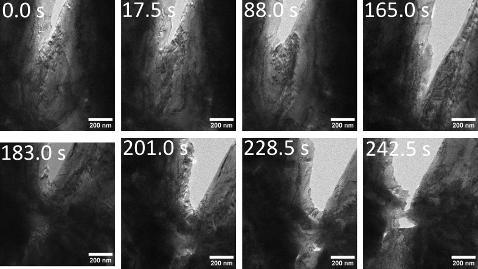
Figure 1. Selected Ag TEM frames showing crack opening accompanied by extensive evolving line and band contrast. The images motivate competition between opening and accommodation. Contrast depends on specimen thickness, diffraction condition, orientation, and temporal resolution, so limited contrast in the companion sequence does not prove the absence of plasticity.
The observations establish the physical motivation but do not quantitatively calibrate the model. The selected frames have nonuniform time labels, and synchronized force data are unavailable. The calculations therefore ask what responses follow from stated activation and accommodation laws; they do not fit the Ag sequences or assign the constructed families to Ag.
For a mechanism \(i\) with local drive \(q_i\), state history \(z(t)\), multiplicity \(\mathcal M_i\), and attempt frequency \(\nu_i\),
Conditional on no intervening event, the next-event density is
This expression is used locally, not as a frozen race over an entire loading path. Dislocation emission is nonabsorbing: after emission changes the process-zone state, the rates and mechanical feedback are updated. Crack opening is absorbing at the current geometry and is represented by a renewal action
where \(R\) is uniform on \((0,1)\). Writing \(\Lambda_c[s;z(s)]\) emphasizes that the action depends on the full state history, not only the state at the event.
Opening and emission use stress-biased activation surfaces
The parameterized landscapes allow opening and accommodation to have distinct energy scales, stress sensitivities, and temperature derivatives. No toughness–temperature curve is supplied.
The principal spatial model is a plane-strain finite-element calculation of a 2 mm by 4 mm body containing a 0.5 mm left-edge notch. Symmetric top and bottom displacement imposes mode-I opening. A graded triangular mesh supplies the stress field and a signed \(J\)-based coordinate
\(K_J\) is the model’s field-derived loading coordinate and is used consistently below; it is not presented as a standardized experimental toughness measurement.
When the opening action reaches its threshold, an explicit sharp-wake increment is committed and the stiffness-degraded crack geometry is updated. The spatial formulation couples finite-element stress and \(J\) fields to this tracked wake; it does not solve an AT1 or AT2 variational damage-evolution law. A separate branching example in the Supporting Information illustrates the broader morphology capability but is not part of the single-front response calculations.
The original spatial PF solver carries a native coarse-grained front state comprising two slip-trace channels and 80 bins over 50 μm. Each channel begins with a finite local source opportunity \(C_s\). For source \(s\),
This is a mean population update. Individual emitted lines are not sampled one by one. Activated content is deposited into the leading bins as mobile content \(M_s(x)\). Mobile and retained content \(R_s(x)\) exchange according to
The exchange equations are solved exactly over each local interval and the mobile field is then transported by \(v\Delta t\). The selected release closure maps Taylor completion to
where \(P\) is the regularized lower incomplete gamma function. The reference time is a phenomenological constitutive parameter. Explicit temporal recovery is zero in the selected parameterizations.
The accumulated slip expands an effective opening radius, while signed retained content changes the opening drive:
Mobile and wake shielding are zero in these calculations. Plastic activity is therefore not synonymous with mechanical shielding: rapidly transported mobile content can be large while the retained, signed contribution to \(K_{\rm sh}\) remains small.
Opening progress also defines a subgrid moving-coordinate increment. If \(B\) is normalized progress toward the next sharp-wake increment of length \(L_c\), then a local action increment \(dB\) translates the process-zone coordinate by
The binned mobile, retained, and slip fields are shifted toward the moving origin; content crossing the origin enters the wake. The swept local source opportunity is renewed according to
The mechanical crack geometry is not advanced by \(d\xi\) at every substep. It remains at the last committed sharp wake until \(B=1\), when the complete increment \(L_c\) is added. Thus \(d\xi\) is a constitutive expected subgrid advance used to evolve the front-local material state during partial opening progress; it is not a separately resolved or measured sharp-crack extension. Mechanics feels the accompanying shielding and radius changes before the outer geometry is committed. This closure preserves a continuous mean opening velocity within a discrete geometry update and is treated as a model assumption when interpreting transient state loss and source exposure.
The source budget is consequently local rather than global. It limits the opportunity available at the current front, but cumulative emission can exceed the instantaneous capacity as the moving coordinate samples fresh material.
For a fixed stochastic threshold and a specified path, the first-event condition may be written \(A_c(K_*,T)=\Xi\). Its derivative is
The first numerator term describes the direct temperature sensitivity of opening at fixed state history. The functional term \(\delta_z A_c\) represents changes to the entire history of emission, exchange, transport, shielding, source exposure, and radius. It is useful for separating direct from state-mediated trends, but it does not provide a unique percentage allocation among coupled state variables.
The opening barrier can be related to a cohesive separation landscape. For cohesive free energy per area \(\phi(\delta)\), applied normal traction \(t_n\), and physical activation-patch area \(A_*\),
Between a metastable minimum and saddle,
For a triangular bilinear law with peak traction \(t_c\) and work of separation \(\Gamma_0\),
This identity supplies an energetic interpretation, not a separately calculated response curve. The numerical barriers reported below are evaluated by the constitutive routines used by the original PF and FEM/CZM trajectories; no independently drawn cohesive shape or analytical first-passage prediction is used as evidence.
Four fixed parameter families were evaluated over 300–1300 K: Peak, DBTT, Weak-T, and Ceramic-like. These labels describe calculated response shapes. Cubic elastic constants \(C_{11}=523\), \(C_{12}=203\), and \(C_{44}=160\) GPa give a Zener ratio of one. Rotation therefore leaves the elastic stiffness invariant while changing the opening and slip/source projections.
The primary two-dimensional calculations use one random threshold per condition. Focused comparisons use matched stochastic ownership to examine loading rate, 45° rotation, and seed sensitivity. Opening-only controls preserve the full spatial geometry, finite-element mechanics, loading convention, and opening threshold while disabling only process-zone plastic evolution.
Representative propagation calculations were continued to at least 50 μm projected extension. An increment is classified as reload-separated only when applied opening increases by at least 0.5% of its initiation value after the preceding burst and reaction rebuilds by at least 1%. This distinguishes physical reloading from numerical rows inserted between events.
The cavity comparison uses the full-order V11 DBTT/1200 K/seed-3621 pair, resumed from exact native paired checkpoints after the qualified migration dwell. The final matched window applies a 1 µm s\(^{-1}\) total-opening ramp for 0.2 s. The fracture stream, temperature, material, and noncavity laws remain matched; the controlled difference is permission for cavity evolution. No hybrid trajectory is used.
The cohesive finite-element comparison uses the common 2 mm × 4 mm specimen, Peak/1000 K, 0° orientation, and seed 8666. Identical-mesh elastic controls precede matched tip-only and full-field calculations. The cohesive/topological backend does not reproduce the sharp-wake discretization, so first-event K is compared directly while openings and event lengths remain native observables rather than forced parity targets.
Full parameters, numerical procedures, refinement results, and additional figures are given in the Supporting Information.
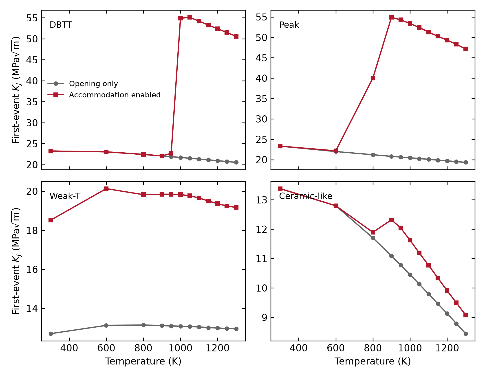
Figure 2. Original spatial-PF first-event \(K_J\) for four fixed parameter rows, each evaluated at twelve temperatures with accommodation enabled and with the matched opening-only control. Every one of the 96 predeclared cases reached a physical first event under the common endpoint contract. Curves connect sampled temperatures within a fixed row and arm; they are not fits.
The current calculation produces response magnitudes and shapes that supersede the historical draft curves. DBTT spans 22.08–55.11 MPa√m with accommodation enabled, compared with 20.54–23.23 MPa√m in the opening-only arm. Peak spans 22.17–54.90 MPa√m versus 19.35–23.33 MPa√m. Their largest paired elevations are 156.1% at DBTT/1050 K and 163.7% at Peak/900 K. Weak-T shows a broad elevation: 18.52–20.14 MPa√m enabled versus 12.71–13.15 MPa√m opening-only, with a maximum 53.4% effect at 600 K. Ceramic-like remains the lowest response and has a smaller maximum effect of 11.7% at 950 K.
The family names identify fixed constructed parameter rows, not calibrated materials. The comparison supports the mechanistic statement that inherited accommodation can overwhelm direct opening softening over parts of the temperature domain. It does not uniquely apportion the change among shielding, blunting, transport, and renewed source exposure.
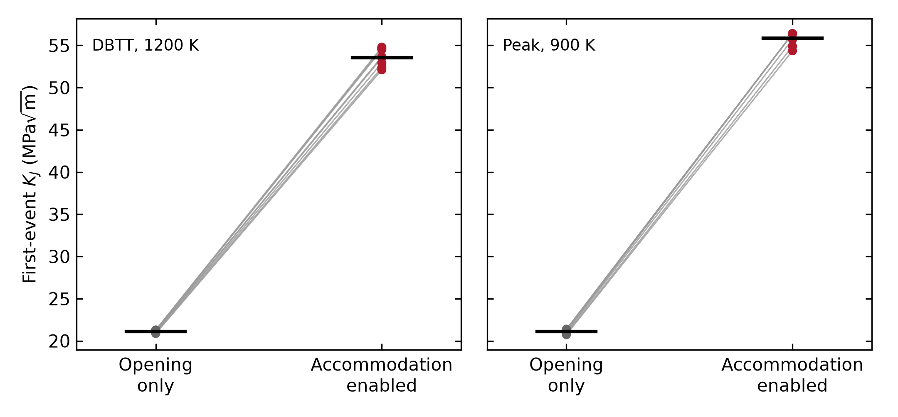
Figure 3. Eight predeclared paired seeds at DBTT/1200 K and Peak/900 K. Each point is the enabled-minus-opening-only first-event difference under matched stochastic ownership. Bars show two-sided Student-t intervals for the mean paired gap (7 degrees of freedom); they are not tail or tolerance intervals.
All 32 arm-level calculations fractured. The mean paired gap is 32.45 MPa√m for DBTT/1200 K (sample standard deviation 0.88 MPa√m, empirical range 31.24–33.50 MPa√m, 95% t interval 31.71–33.19 MPa√m). Peak/900 K gives 34.74 MPa√m (standard deviation 0.59 MPa√m, range 33.63–35.22 MPa√m, interval 34.25–35.23 MPa√m). The effect is therefore large relative to the observed eight-seed spread at these two anchors. The finite ensemble does not resolve distribution tails or establish uncertainty for every temperature.
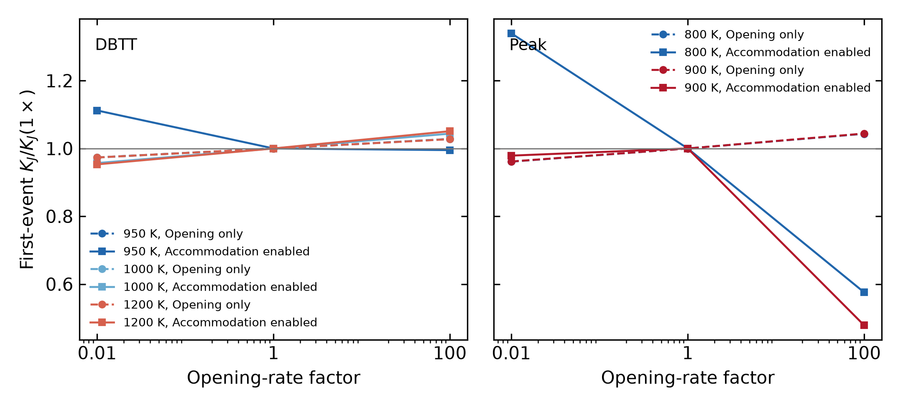
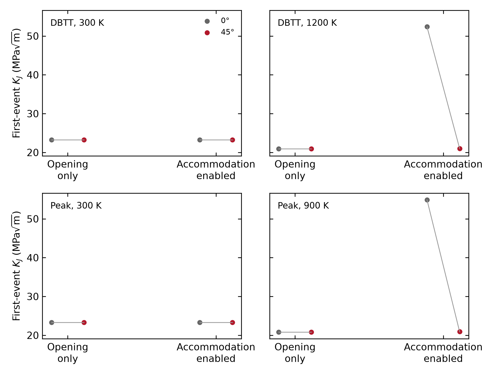
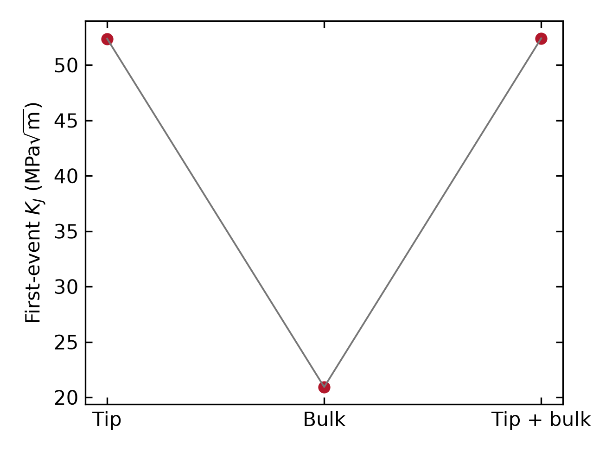
Figure 4. Question-driven original spatial-PF sensitivities. (a) Rate factors 0.01, 1, and 100 at five selected material/temperature anchors with matched opening-only arms. (b) 0° and 45° at selected low- and active-accommodation states. (c) tip-surface, bulk-uniform, and tip-plus-bulk source support for DBTT/1200 K. Every Cartesian panel labels its physical x coordinate; no curve is promoted to a global atlas.
Across the selected rate cases, the largest absolute change from the matched 1× first-event coordinate is 52.12%. Changing orientation from 0° to 45° gives paired changes from −61.91% to 0.00%. The cubic elastic tensor is invariant for the chosen constants, so the orientation response arises from the resolved opening and accommodation projections rather than an elastic-modulus change. At DBTT/1200 K, tip-surface, bulk-uniform, and tip-plus-bulk sources give 52.376, 20.934, and 52.414 MPa√m. Uniform source availability is thus not uniform response, and adding bulk support does not simply add to the tip-controlled result. These are local tests of competing kinetics, not transferable correction factors.
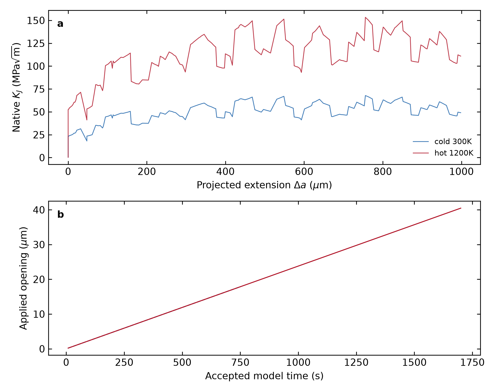
Figure 5. Complete chronological native observation histories for DBTT at 300 and 1200 K. Re-equilibrated, exact pre-event, and committed stages retain their actual loading time, opening, reaction, geometry, \(J\), \(K_J\), and process-state associations. Projected extension and path arclength are distinct.
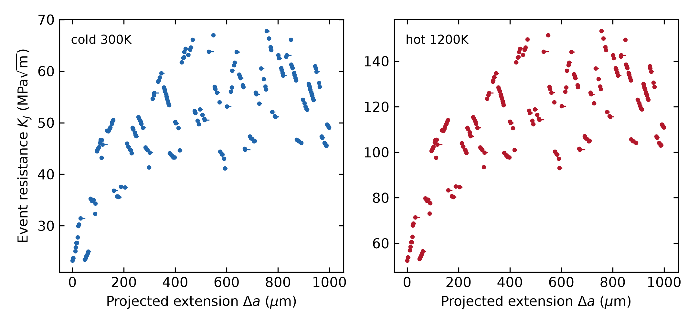
Figure 6. Native pre-event J-derived \(K_J\) associated only with each realized committed jump. The 100, 500, and 1000 µm queries are represented by measured lower/upper jump brackets in the accompanying data; no value is interpolated or moved to an uncomputed length.
Both trajectories contain 203 exact pre-event/committed pairs and reach 1004.926 µm projected extension and 1008.560 µm path arclength. The 300 K event coordinates span 23.234–67.807 MPa√m, while the 1200 K coordinates span 52.376–153.307 MPa√m. Their geometry-event files are byte-identical because the common seed provides a controlled common-mark comparison; this is not evidence that morphology is temperature-independent. Each trajectory contains one monotonic loading segment and no independent unload/reload points. We therefore call Figure 6 an event-sampled resistance history rather than a standardized experimental R-curve, and we do not force a rising slope.
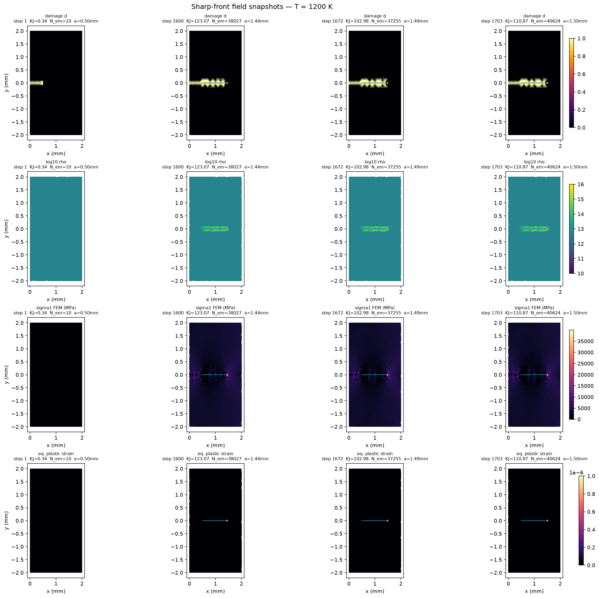
Figure 7. Native original-PF field snapshots from the 1200 K developed trajectory at stored states 1, 1600, 1672, and 1703. Rows retain the original renderer's damage, log10 density, maximum-principal-stress, and equivalent-plastic-strain channels. The front-local population is not spread into a reconstructed two-dimensional density map.
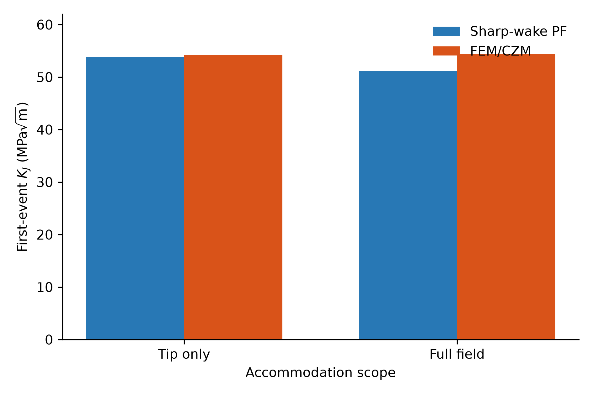
Figure 8. First-event \(K_J\) for the matched Peak/1000 K, 0°, seed-8666 specimen with tip-only accommodation and with the selected full-field Peierls–Taylor bulk law. Bars are native first-event observations, not a fitted mapping. The identical-mesh accommodation-disabled elastic reference agrees exactly at all three imposed openings.
The common plane-strain body is 2 mm by 4 mm with a 0.5 mm initial notch and symmetric total opening. On the same mesh and damage field, PF and FEM/CZM give bitwise-coincident reaction, stored energy, ahead-tip stress, common-domain \(J\), and \(K_J\). With tip-only accommodation, first-event \(K_J\) is 53.878 MPa√m for PF and 54.212 MPa√m for FEM/CZM, a 0.62% relative difference. With the exact selected bulk law active, the values are 51.110 and 54.407 MPa√m, a 6.06% difference. Within PF, the bulk law changes the first-event coordinate by −5.14%; within FEM/CZM it changes it by 0.36%.
The agreement is in the selected fracture coordinate, not every native observable. Production meshes, J supports, topology backends, event lengths, and random-stream ownership differ, so total opening is reported in the SI but is not treated as a parity metric. The full-field FEM/CZM path completed four physical events and 20.827 µm projected extension. A later in-memory refinement-pointer audit failed after the physics completed; the persisted compact-mesh record verifies the 330 µm refinement radius and a fresh one-step run verifies the recovery. This is disclosed as an audit-export limitation rather than recast as a physical failure.
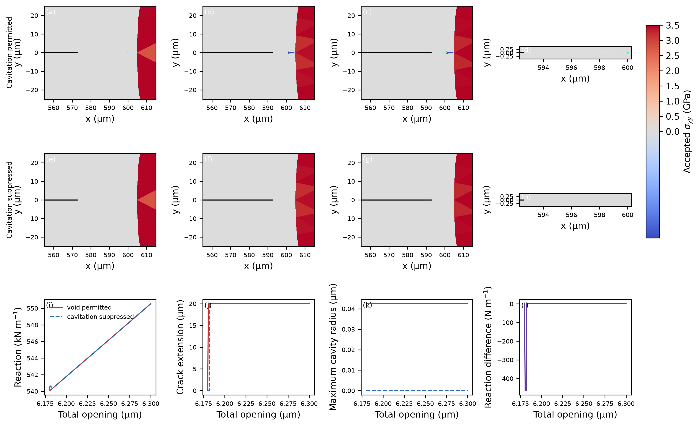
Figure 9. Native accepted stress fields, crack graphs, and actual-radius cavity outlines from the qualified full-order DBTT/1200 K/seed-3621 ancestry used to establish the paired cavity calculation. Columns (a,e), (b,f), and (c,g) are the pre-event, both-advanced, and historical endpoint states; (d,h) show the endpoint ligament at actual scale. Panels (i–l) give the paired historical load/geometry histories. The plate documents resolved geometry and field provenance; the continued 0.2 s endpoint comparison is quantified from exact restored native checkpoints and Table S11.
The enabled and suppressed arms were resumed from their exact paired checkpoint and loaded for 0.2 s at 1 µm s−1. Both end at 6.6010101 µm total opening. The suppressed arm accepts four ordinary 20 µm advances, increasing graph length by 80 µm. The enabled arm accepts no crack advance; its resolved cavity radius changes only from 42.4796461 to 42.4878668 nm and no crack–void connection forms. At the endpoint, the ordinary front has a valid nested-local-J drive of 4155.24 J m−2, \(K_{\rm eff}=30.9661\) MPa√m, and an effective rate of 3.996 s−1. The cavity approach candidate uses the qualified complete-ligament topology energy, 43.6472 J m−2, \(K_{\rm eff}=3.17371\) MPa√m, and a rate of \(5.39\times10^{-58}\) s−1.
This is strong shielding over the declared finite exposure, not proof of permanent arrest or a general cavity-toughening law. The cavity predates the continuation, so the result does not predict nucleation. The exact terminal native states and topology counts were restored before an event-history JSON exporter failed on a barrier dataclass; therefore individual event times inside the final window are not claimed.
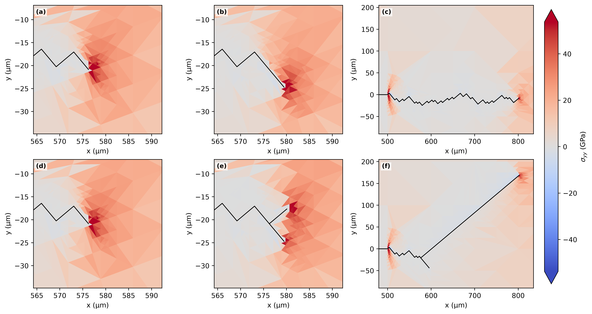
Figure 10. Separate accepted branching fields and crack graphs. This morphology example is not pooled with the single-front temperature dataset. A bounded combined branch–cavity compatibility calculation additionally preserves root branch, downstream child, cavity, field transfer, topology ledgers, and exact terminal restart, but does not constitute a calibrated recursive branch-kinetics study.
The combined public route ends with distinct root, child, and cavity owners and reproduces its uninterrupted terminal fingerprint exactly after restart. Separately, the V3.6 cyclic route reproduces a populated native terminal payload exactly at positive load ratio \(R=0.1\). Its mobile density, source-activation, plastic-shear, and cumulative swept ledgers are nonzero; the chosen waveform does not reverse slip sign. These tests establish option and restart preservation only and are not used as fracture-response data.
The opening-only curves vary over comparatively narrow ranges for DBTT and Peak, whereas the coupled responses rise to approximately 55 MPa√m. The elevation is therefore a history-dependent accommodation effect under the stated laws, not a prescribed toughness shelf. Conditional opening action accumulates while emission, transport, retention, release, blunting, and source exposure continually change the state on which the next increment acts. The large paired-seed gaps show that this effect is robust at the two active anchors relative to the observed threshold variation, while the small ensemble and constructed material rows prevent a population-tail or named-material claim.
Loading rate changes time available to both opening and accommodation. Crystal rotation changes both opening and slip/source projections. Source geography changes where accommodation can be supplied, but mechanics and transport determine whether it becomes effective. The large pure-bulk decrease at DBTT/1200 K and near identity of tip and tip-plus-bulk values demonstrate why source density cannot be interpreted as an additive toughness term. These sensitivities identify competing state paths; they do not define universal shift factors.
The developed histories show why an initiation coordinate cannot be carried forward as a material resistance curve. \(J\) and \(K_J\) belong to exact equilibrated or pre-event mechanical states, whereas extension belongs to the subsequently committed geometry. Assigning a terminal K to an unobserved post-event state or interpolating across a discrete jump would invent data. The event-sampled resistance view retains the measured pre-event value across only its realized jump. Its broad range documents evolving mechanical conversion and inherited state, but a single monotonic segment cannot provide multiple independent unload/reload resistance points.
The identical-mesh elastic reference closes the geometry, boundary, unit, stiffness, and base-operator questions. The sub-percent tip-only and six-percent full-field first-event differences then quantify behavior after distinct crack and accommodation representations are activated. The sharp-wake PF implementation is not a variational AT1 or AT2 phase-field model: it carries a stiffness-degraded wake and commits explicit increments when an accumulated kinetic action reaches its mark. The FEM/CZM implementation represents separation through cohesive/topological events. Their agreement in \(K_J\) supports a common competing-kinetics organization, not equality of openings, event sizes, or internal states.
Baseline AT2 uses \(w(d)=d^2\) and has no finite elastic onset because \(w'(0)=0\); AT1 uses \(w(d)=d\) and has a finite onset. Both can be extended with thermal, viscous, or plastic physics. The present distinction is the explicit physical-time first-passage law coupled to inherited accommodation, not a claim that thermal activation is unavailable to conventional phase field or cohesive fracture.
The cavity result is qualitative and large over its finite window: the ordinary front advances while the cavity approach candidate remains effectively inactive. The important coupling is not cavity span alone but the topology-aware mechanical observer. A contour intersecting a free cavity cannot be used as an ordinary local crack-tip derivative. The qualified complete-ligament operation supplies the admissible approach drive without counting cavity free span as fractured solid. Because the continuation begins with a pre-existing resolved cavity and ends without connection, it establishes finite-window shielding, not nucleation, coalescence, or permanent arrest.
The parameter rows are constructed and uncalibrated. The accommodation variables are coarse-grained populations; two slip traces and a front-local coordinate do not resolve individual dislocations. The source renewal and Taylor-release mappings are constitutive closures. The baseline curves use one seed per condition, with eight-seed uncertainty only at two active anchors. Rate, orientation, and source studies are deliberately local. The developed paths share common-mark geometry and one monotonic load segment. PF/FEM comparison is on one material/temperature/seed condition and retains different production discretizations. The cavity comparison is one paired realization with a finite 0.2 s continuation, and its inner event chronology is unavailable after the exporter failure. These limits constrain inference without weakening the directly observed comparisons.
1. Fixed opening and accommodation landscapes generate distinct temperature-response classes without prescribing toughness curves; for the current DBTT and Peak rows, accommodation raises selected first-event coordinates by more than 150% relative to matched opening-only controls.
2. At DBTT/1200 K and Peak/900 K, the accommodation-associated gaps are much larger than the observed spread across eight paired seeds, although distribution tails and other temperatures remain unresolved.
3. Rate, orientation, and source geography act through the evolving state path. Their effects cannot be represented by a universal horizontal shift or additive source-density correction.
4. Developed 1 mm trajectories require stage-faithful reporting: the native pre-event coordinates form an event-sampled monotonic resistance history, not independent unload/reload R-curve points.
5. Original PF and FEM/CZM calculations share exact elastic mechanics on the common reference and give first-event \(K_J\) within 0.62% for tip-only and 6.06% for full-field accommodation, while retaining distinct openings and topology.
6. In the matched finite cavity continuation, the suppressed arm advances 80 µm and the enabled arm does not advance or connect; the resolved cavity strongly shields the approach candidate over 0.2 s but does not establish permanent arrest.
The accompanying package contains plotted numerical tables, source mappings, campaign definitions, hashes, commands, and validated manuscript/SI exports. Full native histories, meshes, and checkpoints remain in the hashed evidence roots listed by the reproducibility manifest rather than being duplicated in the compact paper package. No reduced, surrogate, fitted-transfer, or frozen-state rethresholded trajectory is used as numerical evidence.
1. A. A. Griffith, “The phenomena of rupture and flow in solids,” *Philosophical Transactions of the Royal Society A* **221** (1921) 163–198. https://doi.org/10.1098/rsta.1921.0006
2. J. R. Rice and R. Thomson, “Ductile versus brittle behaviour of crystals,” *Philosophical Magazine* **29** (1974) 73–97. https://doi.org/10.1080/14786437408213555
3. J. R. Rice, “Dislocation nucleation from a crack tip: an analysis based on the Peierls concept,” *Journal of the Mechanics and Physics of Solids* **40** (1992) 239–271. https://doi.org/10.1016/S0022-5096(05)80012-2
4. H. A. Kramers, “Brownian motion in a field of force and the diffusion model of chemical reactions,” *Physica* **7** (1940) 284–304. https://doi.org/10.1016/S0031-8914(40)90098-2
5. J. R. Rice, “A path independent integral and the approximate analysis of strain concentration by notches and cracks,” *Journal of Applied Mechanics* **35** (1968) 379–386. https://doi.org/10.1115/1.3601206
6. J. R. Rice and G. E. Beltz, “The activation energy for dislocation nucleation at a crack,” *Journal of the Mechanics and Physics of Solids* **42** (1994) 333–360. https://doi.org/10.1016/0022-5096(94)90013-2
7. A. S. Argon, “Brittle to ductile transition in cleavage fracture,” *Acta Metallurgica* **35** (1987) 185–196. https://doi.org/10.1016/0001-6160(87)90228-8
8. V. Tvergaard and J. W. Hutchinson, “The relation between crack growth resistance and fracture process parameters in elastic-plastic solids,” *Journal of the Mechanics and Physics of Solids* **40** (1992) 1377–1397. https://doi.org/10.1016/0022-5096(92)90020-3
9. A. Azizi and S. J. Dillon, “An Arrhenius–hazard approach to strength additivity, dynamic strain aging, and yield surfaces,” *Acta Materialia* **316** (2026) 122461. https://doi.org/10.1016/j.actamat.2026.122461
10. L. Ambrosio and V. M. Tortorelli, “Approximation of functionals depending on jumps by elliptic functionals via Γ-convergence,” *Communications on Pure and Applied Mathematics* **43** (1990) 999–1036.
11. G. A. Francfort and J.-J. Marigo, “Revisiting brittle fracture as an energy minimization problem,” *Journal of the Mechanics and Physics of Solids* **46** (1998) 1319–1342.
12. B. Bourdin, G. A. Francfort, and J.-J. Marigo, “Numerical experiments in revisited brittle fracture,” *Journal of the Mechanics and Physics of Solids* **48** (2000) 797–826.
13. K. Pham, H. Amor, J.-J. Marigo, and C. Maurini, “Gradient damage models and their use to approximate brittle fracture,” *International Journal of Damage Mechanics* **20** (2011) 618–652. https://doi.org/10.1177/1056789510386852
14. C. Miehe, F. Welschinger, and M. Hofacker, “Thermodynamically consistent phase-field models of fracture,” *International Journal for Numerical Methods in Engineering* **83** (2010) 1273–1311. https://doi.org/10.1002/nme.2861